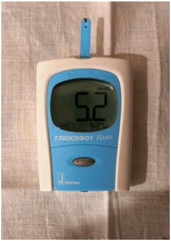

Les entreprises de la maladie:
vous apprendrez sur le DIABÈTE, tout ce qui se cachait
les
années à venir
Catégories:articles utiles pour les diabétiques

Salut! Je m'appelle André Dupont.
Je n'ai jamais écrit les commentaires, mais j’ai décidé de le faire pour les autres comme moi, le patient atteints de diabète de personnes. Parce que, à cause d'erreurs médicales j’ai presque perdu ma vie.
J'ai 35, j'ai une femme et deux enfants. Je travaille comme cuisinier dans une cantine scolaire. Il y a dix ans j'ai été diagnostiqué avec du diabète, 2e type.
Je me sentais fatigué, je ne pouvais pas manger normalement, penché il y a seulement maigre . Lors de mon travail! En outre, toujours eu pour surveiller les niveaux de sucre dans le sang.

Ma journée a commencé avec des perforations du doigt et la mesure de sucre. J'ai perdait sur les médicaments en milliers d'euros par mois . C'est à un salaire d'un cuisinier! La catastrophe! Encore et le PRIX de la tablette en France a AUGMENTÉ de l'ordre en raison des événements récents.

j'ai dû vendre la maison et la voiture, de prendre un prêt pour payer le traitement et acheter des bandelettes de test ... un Peu de ne pas lui-même a conduit à la tombe, en prenant tout cela. Pour moi c'est effet , et un couple de mois, je suis très a grossi. Et encore est devenu un fardeau pour sa famille.
a Vécu dans la crainte que les enfants apparaît le diabète de type 2.
Je pensais que le pire ne peut, encore une fois le cas de ne pas compromettre le reste de ma vie.
J’ai acheté des chaussures neuves et frotté les pieds à cors. Après quelque temps, ils se sont transformés en non-guérison des plaies. Je ne sentais pas la douleur, mais il était un il est difficile de marcher, il y avait une sensation de brûlure des pieds , donc je suis allé à la médecin. Il a dit que la probabilité de développement de la gangrène, ce qui signifie un je peux PERDRE PIEDS!!!

Ce qu'il a entendu m'a jeté dans une sueur froide. Je savais que la gangrène sont fréquentes chez les diabétiques, mais je ne pensais pas que moi avec cette rencontre.
Comment puis-je vivre et travailler sans les pieds!? De votre médecin, je suis sorti avec une énorme peur pour sa vie et... la liste de médicaments encore dix mille roubles.
Le soir du même jour, téléphonés sur skype avec un vieil ami, il vit en Amérique. Il a écouté mes ennuis, des problèmes de santé, qui ne manque pas d'argent sur les médicaments. À son tour, m'a dit que dans l'Amérique sur le marché des médicaments qui se passe dans une situation analogue. Les médecins recommandent également d'acheter des médicaments qui ne font qu'aggraver la santé.
en Effet, PLUS DE MALADES, PLUS BESOIN de PILULES. Et leur vente apporte un fou le revenu des sociétés pharmaceutiques . Je pense que la France dans cette affaire aussi n'est pas une exception, tous soigneusement passé sous silence.

J’ai demandé à un ami si il sait qu'en Amérique pour soigner le diabète, il m'a raconté que tous refusent les médicaments de faveur des suppléments naturels . Leur efficacité est beaucoup plus élevé, et mal au corps et ils n'apportent pas, à la différence de la pilule. Presque tous connus des médicaments contre le diabète chez eux remplace le un outil spécial - «» . Chez nous en France, je suis sur le tel n'a pas entendu, même si lui a demandé de jeter lien sur ce produit.
J`ai découvert que "" est le organique moyen en forme de la poudre. Son principal composant de l`inuline, obtenu à partir de plantes Heliánthus tuberósus. Il a été utilisé pendant des siècles dans la médecine orientale pour normaliser les niveaux de sucre dans le sang. Après de nombreuses recherches de la science moderne a prouvé l`efficacité de ce polysaccharide dans la lutte contre le diabète de deuxième type. Mais le plus important, de l`inuline en combinaison avec de la L-arginine permet de récupérer des cellules du pancréas qui fabriquent l`insuline!

”” est le seul additif sur la base de cet extrait. Dans le diabète de 2e type, le réduit le glucose de sang, réduit ou totalement élimine (de plus de 20% des patients) le besoin de préparations, renforce les vaisseaux sanguins et régule le métabolisme.
" il est recommandé d'utiliser en combinaison avec déjà la
pharmacothérapie , et à titre de PRÉVENTION, si un risque de développement de la maladie.
J'ai décidé d'essayer de””, car à ce moment je n'avais rien à perdre, et il a
ordonné le site le fabricant.
En général, depuis le matin, je scène dans un verre d'eau chaude, dilué il une cuillère à café de poudre sans toboggans et buvait à petites gorgées. Honnêtement, dans le miracle, je ne croyais pas. Mais en vain... une semaine plus Tard, j'ai remarqué qu'il est devenu moins fatigué, peu à peu pu manger de nourriture . Les niveaux de sucre dans le sang est venu à la normale (jusqu'à la réception de la «» le niveau de glucose dans le sang à jeun a été 9,6 , après deux semaines de prise sur un estomac plein – 5,4 ) et la plaie sur la jambe de guérir. Je ne parle pas de poids. J'ai vidé 4,5 kg!
Je ne pouvais pas croire les résultats... c'est la solution pour les patients atteints de diabète de la 2e type.
a Disparu de la douleur et des picotements, de l'anxiété à propos de ce que lui . Pas d'expériences diriez-vous d'opérations et d'estoc. Je N'ai PLUS BESOIN d'ACHETER de la MONTAGNE de COMPRIMÉS. J'ai vaincu le diabète de la production de fausses sociétés pharmaceutiques et des conseils soi-disant «experts».

il suffit de dire, “” est vendu seulement en ligne, parce que l'industrie ne lance pas un additif sur le marché et tente de réduire ses ventes. Rappelez-vous que les compagnies pharmaceutiques ne vous voient comme un patient, qui peut guérir ... Ils voient en vous long de la vie du client.
“” permet d'ÉCONOMISER VOS centaines de milliers, qui ont dû se donner pour un tas de médicaments pour les entreprises pharmaceutiques. Soyez prudent, en France, parfois, s'infiltrent la contrefaçon. Réservez un SEUL fournisseur officiel dans la fédération de France, il garantit la qualité.

j'espère que mon histoire sera bénéfique et sauver une vie. Soyez en bonne santé!
Commentaires
Mon ami médecin a conseillé cet outil DE PRÉVENTION. «» se dit en ce moment le meilleur remède contre le diabète. Regardez, pour lui dirai que jusqu'à la prise de glucose à jeun a été 8.7, dans un mois – 5.9 APRÈS le REPAS! Je continue à boire.
Merci d'avoir écrit. Nous avons déjà perdu l'espoir... la Verge, commandé ce site. Après quelques semaines, il est allé examiné avec 7.9 insuline est 4.8!!!
Aussi, je veux être écrit, pensé, le divorce ordinaire, jusqu'à ce que lui-même n'est pas convaincu. Avant la réception de cet outil, l'insuline à jeun était de 9,8 mois à plein ventre-5.9. J'habite sur la santé!
Bonjour, je m'appelle Sophie. Je ne souffre pas de diabète. Et mon père est diabétique de type 2 depuis plus de 15 ans. Dites-moi, comment me traiter ce problème? Très aime le père, et je lui souhaite de longues années, je ne sais pas ce que je veux faire si tout d'un coup...de Conseiller comment l'aider, je vous serais très reconnaissante
Essayez de lui avant de la manger ses médicaments à donner un verre d'eau tiède avec un « ». Des médicaments classiques, il n'annule pas, mais voici sucre réduire aidera certainement!
mon papa un problème similaire, qu'il l'insuline ne se fend, pilules boit. Alors il a commencé à écouter de la mère, assis sur un régime alimentaire et a commencé à prendre ce supplément, quand cessé de sentir le doigt sur la jambe...
un hôtel de choix d'un remède! Nous criblés de dettes ont été, cher coûtait le traitement de son fils. Au travail, une connaissance m'a conseillé, disent-ils, essayez le “”. Je ne croyais pas, j'ai que ça changerait quelque chose, mais que le diable ne plaisante pas. Le fils est en bonne santé maintenant. Représentez, avec 9,7 de l'insuline a diminué jusqu'à 5.9!
J'ai aussi été le 2ème type de diabète, a été un fardeau pour la famille. La sœur de la médecine a trouvé un site où les détails indiquant l'action “” et de son effet positif. Nous avons tout de suite commandé cette complément, il est tout simplement m'a ramené à la vie normale!
Mon frère a souffert de diabète 2. Je suis désespérée, mais commandé. Le dernier vœu a été exaucé! Le glucose et 2 heures après le repas a été de 9,8 et une semaine après la réception de JEÛNE est devenu 5,3! Voici lien j'avais commandé “”.
Je travaille comme médecin dans une clinique privée. Me proposaient de vendre des patients à des médicaments en %, mais comment pouvez-vous.. ma mère est malade du diabète 2, etc., jusqu'à ce que je suis la méthode d'essais et d'erreurs n'a pas trouvé un moyen agissant. Résultats: à la réception de la «» glucose à jeun - 8.7. Après 3 mois de la réception - 5.9. Jusqu'à la prise de la glycémie 2 heures après un repas - 9.8, et après 3 mois 2 heures après un repas - 5.2. Je pense que bientôt tout en évitant les médicaments.
Les reptiles,les poignées chauffent!!!!! Combien déjà, vous pouvez prescrire la pilule, quand il y homologues à bas prix!?
là Où vous étiez avant avec votre article... Souffre de diabète... :(
Ne désespérez pas! Moi «» aide à. Sur lui-même! Buvez de l'additif du matin avec des médicaments de base pour la prévention et le devient plus facile
Qu'est-ce que votre “”?
Élémentaire:)
je suis au lieu de thé avec le matin de sa scie )) Réduit le niveau d'insuline. J'ai eu il y a trois semaines avec 7, 6 , et maintenant - 5,2. Donc voilà))
Ceux qui ont “”, dites-nous ce que dans la composition?
Commandé moi-même, sur l'emballage dans la composition revendiquée : de l'inuline, de l'acide citrique, vitamine B6, B1. Je pense que tout est utile, ne sera certainement pas pire.
Bien qu'il y a cette option! Jamais compris, pourquoi acheter des médicaments par les prix, quand un bon marché des médicaments. Je sors de la retraite, il n'est pas spécialement dans les pharmacies, donc oui,il est préférable de ceux en blouse blanche à écouter,mais de penser avec votre tête
Je l’ai montré à un ami - le médecin “”, il a lu, a été surpris de voir que nous avons en France est généralement vendu! Dit que tous les composants ont vraiment un effet bénéfique sur la santé et de réduire les niveaux d'insuline dans le sang. Pour le diabétique est un outil de toute une trousse de remplacer pleinement.
André, s'il vous plaît, que les résultats
Jai accueilli deux semaines. 7.1 a diminué le sucre jusqu'à 4,8. Certainement besoin de continuer!!!